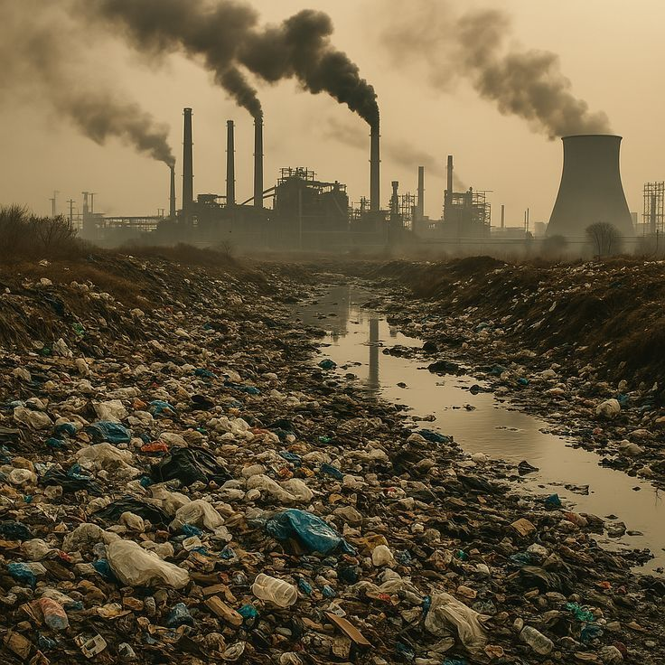

Saya memilih membuat Butterfly Disc Art karena kerajinan ini mencerminkan penerapan konsep 3R (Reduce, Reuse, Recycle) secara nyata. Di era digital seperti sekarang, DVD dan CD bekas sudah jarang digunakan dan sering kali hanya menjadi tumpukan sampah anorganik yang sulit terurai. Jika dibiarkan, limbah tersebut dapat mencemari lingkungan karena bahan dasarnya terbuat dari plastik dan logam tipis yang membutuhkan waktu sangat lama untuk terurai secara alami.
Dengan membuat Butterfly Disc Art, saya berusaha mengurangi (Reduce) jumlah limbah DVD/CD bekas yang berpotensi mencemari lingkungan. Selanjutnya, saya menggunakan kembali (Reuse) DVD yang tidak terpakai menjadi bahan utama kerajinan tangan yang bernilai seni tinggi. Terakhir, melalui proses daur ulang (Recycle), benda yang awalnya dianggap tidak berguna diubah menjadi produk dekorasi yang menarik, estetik, dan bernilai ekonomi.
Selain berdampak positif bagi lingkungan, kerajinan ini juga menumbuhkan sikap kreatif, inovatif, dan peduli lingkungan. Saya belajar bahwa dengan sedikit imajinasi dan ketekunan, sesuatu yang dianggap sampah ternyata bisa diubah menjadi karya yang bermanfaat dan bernilai jual. Melalui pembuatan Butterfly Disc Art ini, saya semakin memahami pentingnya menjaga kebersihan lingkungan serta menerapkan prinsip 3R dalam kehidupan sehari-hari, agar bumi tetap lestari dan bebas dari penumpukan sampah anorganik.